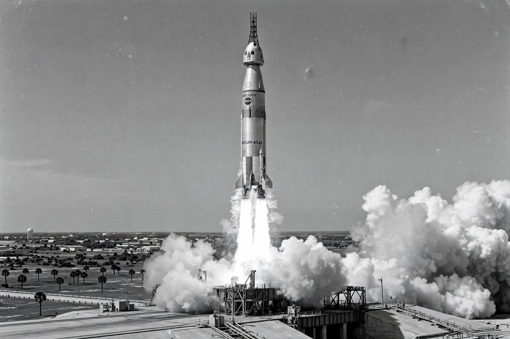

Project Mercury
From Wikipedia, the free encyclopedia

A Mercury-Atlas launch from Cape Canaveral.Project Mercury was the first human spaceflight program of the United States, run by NASA from 1958 to 1963. Its goals were to put a human in orbit around Earth, investigate the ability of humans to function in space, and recover both astronaut and spacecraft safely. It was named after Mercury, the Roman god of travel.
The program flew six crewed missions. Alan Shepard became the first American in space on the suborbital Mercury-Redstone 3 flight (Freedom 7) on 5 May 1961, twenty-three days after Yuri Gagarin's orbital flight for the Soviet Union. On 20 February 1962 John Glenn became the first American to orbit Earth aboard Friendship 7. The final flight, Mercury-Atlas 9 (Faith 7), carried Gordon Cooper on 22 orbits in May 1963.
Spacecraft
The Mercury capsule was a small conical crew compartment, about 1.9 metres across at the base, with a blunt heat shield for atmospheric entry. It carried one astronaut, who had little ability to manoeuvre the craft — a limitation its pilots joked about, calling themselves 'spam in a can'. Two booster types were used: the Redstone for suborbital flights and the much larger Atlas for orbital missions.
The Mercury Seven
The seven original astronauts — Scott Carpenter, Gordon Cooper, John Glenn, Gus Grissom, Wally Schirra, Alan Shepard and Deke Slayton — were military test pilots announced to the public in April 1959. They became national celebrities and helped define the image of the astronaut. Project Mercury was succeeded by Project Gemini, which developed the techniques needed for the Apollo program.